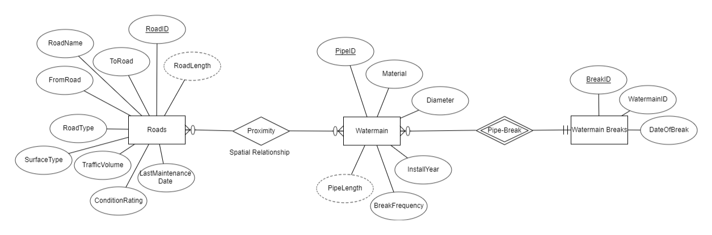

Enhancing Municipal CIP Planning with Spatial Databases
This project showcases the development of a spatial database designed to optimize municipal Capital Improvement Program (CIP) planning. Focused on roads and watermains, the database integrates and analyzes geospatial data to support strategic decision-making, facilitating preemptive maintenance and efficient resource allocation.
View ReportEsri Certifications: A Commitment to Lifelong Learning
Continual learning and professional development through Esri's educational programs. I successfully completed the Cartography MOOC, where I focused on cartographic design and map-making. Additionally, I have completed the following courses to expand my knowledge:
- Esri MOOC: Going Places with Spatial Analysis
- Esri Instructor Led Course: Field Data Collection and Management Using ArcGIS